第2世代（ジョウト地方）ポケモンの英語名一覧
全100匹の英語名と由来
第2世代（ジョウト地方）のポケモン100匹の英語名を、図鑑番号順にまとめました。名前を押すと、英語版図鑑の説明文と日本語訳、英語名の由来が見られます。
| No. | 日本語名 | 英語名 | 英語名の由来 |
|---|---|---|---|
| 152 | Chikorita | chicory（チコリ）がもとになっていると考えられている | |
| 153 | Bayleef | bay leaf（ローリエの葉）がもとになっていると考えられている | |
| 154 | Meganium | mega-（「巨大な」を表す接頭語）がもとになっていると考えられている | |
| 155 | Cyndaquil | cinder（燃えかす）とquill（ヤマアラシのとげ） | |
| 156 | Quilava | quill（ヤマアラシのとげ）とlava（溶岩） | |
| 157 | 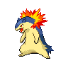 バクフーン | Typhlosion | typhoon（台風）とexplosion（爆発） |
| 158 | Totodile | tot（ちびっ子）とcrocodile（ワニ） | |
| 159 | Croconaw | crocodile（ワニ）、gnaw（かじる）とjaw（あご） | |
| 160 | Feraligatr | feral（野生の）、ferocious（どう猛な）とalligator（ワニ） | |
| 161 | Sentret | sentry（見張り）とferret（フェレット） | |
| 162 | Furret | fur（毛皮）とferret（フェレット） | |
| 163 | 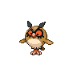 ホーホー | Hoothoot | hoot（ホーホー（フクロウの声））がもとになっていると考えられている |
| 164 | Noctowl | nocturnal（夜行性の）とowl（フクロウ） | |
| 165 | 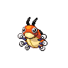 レディバ | Ledyba | ladybug（テントウムシ）、ladybird（テントウムシ）とred（赤） |
| 166 | 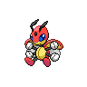 レディアン | Ledian | ladybug（テントウムシ）、ladybird（テントウムシ）、red（赤）とalien（宇宙人） |
| 167 | Spinarak | Spinneret（クモの糸いぼ）、spin（回る）、Spinne（ドイツ語で「クモ」）とarachnid（クモの仲間） | |
| 168 | 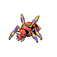 アリアドス | Ariados | フランス語の名前は「Migalos」で、mygale（タランチュラ）、英語名から作られている |
| 169 | Crobat | cross（十字）とbat（コウモリ） | |
| 170 | Chinchou | ドイツ語の名前は「Lampi」で、Lampion（ちょうちん）から作られている | |
| 171 | Lanturn | lantern（ちょうちん）とturn（回る） | |
| 172 | Pichu | ||
| 173 | Cleffa | clef（音部記号）とfable（寓話） | |
| 174 | Igglybuff | jiggly（ぷるぷるした）とwiggly（くねくねした） | |
| 175 | 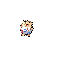 トゲピー | Togepi | |
| 176 | Togetic | chick（ひよこ）がもとになっていると考えられている | |
| 177 | Natu | nature（自然）がもとになっていると考えられている | |
| 178 | 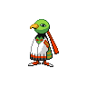 ネイティオ | Xatu | |
| 179 | Mareep | Mary（マリー）とsheep（羊） | |
| 180 | Flaaffy | fluffy（ふわふわの）とbaa（メェ（羊の鳴き声）） | |
| 181 | Ampharos | ampere（電流の単位アンペア）とpharos（灯台） | |
| 182 | Bellossom | bell（鐘）、belle（美女）、bello（イタリア語やスペイン語で「美しい」）とblossom（花） | |
| 183 | 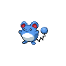 マリル | Marill | mar（スペイン語で「海」）とrill（小川） |
| 184 | 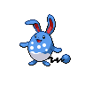 マリルリ | Azumarill | azure（空色）、azul（スペイン語で「青」）、azul marino（スペイン語で「紺色」）とmar（スペイン語で… |
| 185 | Sudowoodo | pseudo（にせの）とwood（木） | |
| 186 | 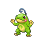 ニョロトノ | Politoed | tadpole（オタマジャクシ）とtoad（ヒキガエル） |
| 187 | 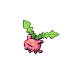 ハネッコ | Hoppip | hop（はねる）、hippity-hop（ぴょんぴょん）、pip（果物の種）とpipsqueak（ちび） |
| 188 | Skiploom | Gait（歩き方）とflower（花） | |
| 189 | Jumpluff | jump（跳ぶ）、fluff（綿毛）とplush（ぬいぐるみの布） | |
| 190 | 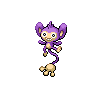 エイパム | Aipom | ape（類人猿）とpalm（ヤシ） |
| 191 | 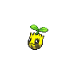 ヒマナッツ | Sunkern | sunflower（ヒマワリ）とkernel（種の核） |
| 192 | Sunflora | sun（太陽）、sunflower（ヒマワリ）とflora（植物） | |
| 193 | Yanma | ||
| 194 | Wooper | wooper looper（ウーパールーパー）がもとになっていると考えられている | |
| 195 | 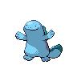 ヌオー | Quagsire | Mire（ぬかるみ）、sire（殿（敬称））とSiren（ギリシャ神話のセイレーン） |
| 196 | Espeon | ESP（超能力）とeon（ブイズの名前に共通する語尾） | |
| 197 | 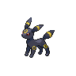 ブラッキー | Umbreon | Umbra（本影）とpenumbra（半影） |
| 198 | 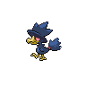 ヤミカラス | Murkrow | murky（にごった）、murder（殺人、カラスの群れ）とcrow（カラス） |
| 199 | Slowking | slow（遅い）とking（王） | |
| 200 | Misdreavus | mischievous（いたずら好きの）とdream（夢） | |
| 201 | 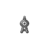 アンノーン | Unown | unknown（未知の）がもとになっていると考えられている |
| 202 | Wobbuffet | wobble（ぐらぐら揺れる）とbuffet（打ちのめす） | |
| 203 | Girafarig | giraffe（キリン）がもとになっていると考えられている | |
| 204 | Pineco | pine cone（松ぼっくり）がもとになっていると考えられている | |
| 205 | Forretress | forest（森）、fortress（要塞）、ferro-（「鉄の」を表す接頭語）とturret（砲塔） | |
| 206 | 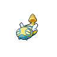 ノコッチ | Dunsparce | dun（くすんだ茶色）とback（背中） |
| 207 | Gligar | glide（滑空する）とgargoyle（怪物の像ガーゴイル） | |
| 208 | 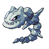 ハガネール | Steelix | steel（はがね）、helix（らせん）、Onix（イワーク）とonyx（しまめのう） |
| 209 | Snubbull | snub（しし鼻）がもとになっていると考えられている | |
| 210 | Granbull | grand（壮大な）、grumble（ぶつぶつ言う）、bulldog（ブルドッグ）とbully（いじめっ子） | |
| 211 | 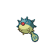 ハリーセン | Qwilfish | quill（針、羽ペン）とfish（魚） |
| 212 | 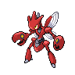 ハッサム | Scizor | scissors（はさみ）、scissor（はさみ）とrazor（かみそり） |
| 213 | Shuckle | shuck（殻）、barnacle（フジツボ）とturtle（カメ） | |
| 214 | 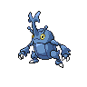 ヘラクロス | Heracross | Hercules beetle（ヘラクレスオオカブト）、Hēraklēs（ギリシャ神話の英雄ヘラクレス）とcross（十… |
| 215 | 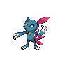 ニューラ | Sneasel | sneaky（こそこそした）とweasel（イタチ） |
| 216 | 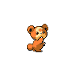 ヒメグマ | Teddiursa | teddy bear（テディベア）とursa（ラテン語で「メスの熊」） |
| 217 | 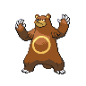 リングマ | Ursaring | ursa（ラテン語で「メスの熊」）とring（輪） |
| 218 | 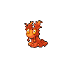 マグマッグ | Slugma | slug（ナメクジ）とmagma（マグマ） |
| 219 | 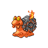 マグカルゴ | Magcargo | magma（マグマ）、escargot（フランス語で「カタツムリ」）とcargo（貨物） |
| 220 | 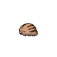 ウリムー | Swinub | swine（ブタ）、nub（こぶ）、cub（熊などの子）とyoung animal（動物の子） |
| 221 | Piloswine | pilose（毛深い）とswine（ブタ） | |
| 222 | Corsola | coral（サンゴ）、sole（舌平目）とsolar（太陽の） | |
| 223 | 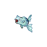 テッポウオ | Remoraid | remora（コバンザメ）とraid（襲撃） |
| 224 | 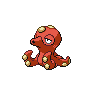 オクタン | Octillery | octopus（タコ）とartillery（大砲） |
| 225 | 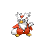 デリバード | Delibird | delivery（配達）とbird（鳥） |
| 226 | Mantine | ドイツ語の名前は「Mantax」で、Manta（マンタ）、Taxi（タクシー）から作られている | |
| 227 | 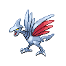 エアームド | Skarmory | sky（空）、armory（武器庫）とarmor（よろい） |
| 228 | 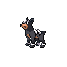 デルビル | Houndour | hound（猟犬）とdour（むっつりした） |
| 229 | 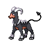 ヘルガー | Houndoom | hound（猟犬）とdoom（破滅） |
| 230 | Kingdra | king（王）とdragon（ドラゴン） | |
| 231 | 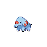 ゴマゾウ | Phanpy | elephant（ゾウ）、infant（幼児）と-y（小さいもの・かわいいものを表す語尾） |
| 232 | 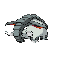 ドンファン | Donphan | don（首領）、-don（「〜の歯」を表す語尾）とelephant（ゾウ） |
| 233 | Porygon2 | Porygon（ポリゴン）とnumber 2（数字の2） | |
| 234 | Stantler | startle（びっくりさせる）、stare（じっと見る）、stag（オスのシカ）とantler（鹿の角） | |
| 235 | Smeargle | smear（塗りつける）とBeagle（ビーグル犬） | |
| 236 | 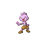 バルキー | Tyrogue | tyro（初心者）、tyke（ちびっ子）とrogue（ならず者） |
| 237 | Hitmontop | hit（打つ）、monster（怪物）とtop（こま） | |
| 238 | 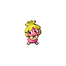 ムチュール | Smoochum | smooch（チュー）とchum（仲よし） |
| 239 | Elekid | electric（電気の）とkid（子ども） | |
| 240 | 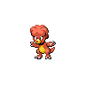 ブビィ | Magby | magma（マグマ）、baby（赤ちゃん）とbooby（カツオドリ） |
| 241 | Miltank | milk（ミルク）がもとになっていると考えられている | |
| 242 | Blissey | bliss（至福）がもとになっていると考えられている | |
| 243 | 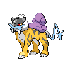 ライコウ | Raikou | |
| 244 | 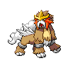 エンテイ | Entei | |
| 245 | 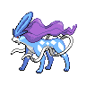 スイクン | Suicune | |
| 246 | 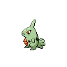 ヨーギラス | Larvitar | larva（幼虫）とtar（タール） |
| 247 | 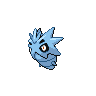 サナギラス | Pupitar | pupa（さなぎ）とadulthood（大人であること） |
| 248 | Tyranitar | tyrant（暴君）、Tyrannosaurus（ティラノサウルス）とtar（タール） | |
| 249 | 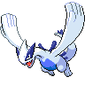 ルギア | Lugia | ἄργυρος árguros（ギリシャ語で「銀」）がもとになっていると考えられている |
| 250 | 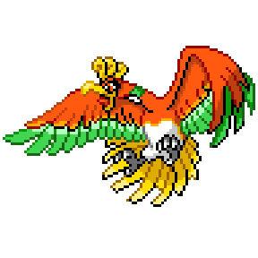 ホウオウ | Ho-Oh | |
| 251 | Celebi | Ceres（ローマ神話の豊穣の女神ケレス）、celebrate（祝う）、celestial（天の）とserenity（静… |